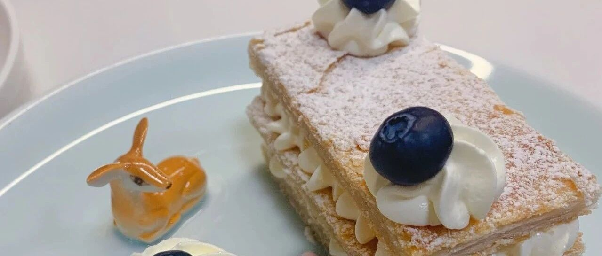

聚会偷懒小主妇 - 手抓饼的妙用
聚会的时候，总是会头疼怎么安排一些小食。新年将至，虽然很多人原地过年，不能回家团圆，但是小聚哪里都可呀。不想大费周章，就跟着水星婆婆做点好分享的小食吧。
其实我觉得最好吃也好做的就是布朗尼还有乳酪蛋糕了。布朗尼【可以忘记一切烦恼的布朗尼】稍微复烤一下上桌，加一点融化的巧克力，简直是秒空。乳酪蛋糕首推2020年的网红巴斯克【新手福利 - 网红巴斯克重乳酪蛋糕】了，不管搅和成什么样子，冷热什么状态都好吃。稍微复杂一点玛德琳【传统柠檬玛德琳】也好吃的。如果说到喝的，桑格利亚Sangria【婆婆夏日饮品】可以的。啧啧啧，一说起来就没完了。（等我布朗尼和玛德琳重新做做吧，这照片也真是没眼看。。。）
今天给大家推荐几个更加可以偷懒的，连方子都不需要有的：
---- 手抓饼系列 ----
#之一 #
两张手抓饼稍微解冻，里面抹上喜欢的酱，我用的巧克力酱，也可以用红豆沙，也可以用花生酱。还是更推荐巧克力酱一点哈。
这是圣诞节做的圣诞树，做了三棵树！！！后面就懒得弄了，直接做了太阳花。旁边用叉子压紧，然后切成想要的形状，或者分割，边角料就直接两层黏在一起，扭一扭就好了。
这些造型的好处就是 每个人都可以扭下来一条吃。感觉有很多。哈哈。


---- 手抓饼系列 ----
#之二 #
这一个就稍微麻烦一点点，但是可以显摆的程度更强点哈哈。
三张手抓饼稍微解冻，叠在一起，擀薄擀平。叉子叉上小孔，200度10分钟，然后压上重物，200度20分钟。
切割，撒上糖粉，淡奶油100g+奶油奶酪30g+少许白砂糖，挤花即可。


如果家里手抓饼少，可以擀平以后，再叠被子一下。

颜值还是可以的哈！


新年花花！好看！！！

水星婆婆祝大家新年快乐！！！